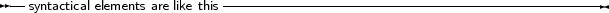
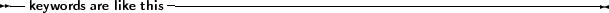
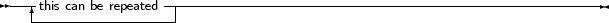
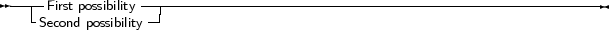
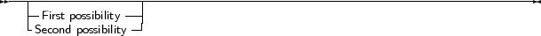

All elements of the pascal language are explained in syntax diagrams. Syntax diagrams are like flow charts. Reading a syntax diagram means getting from the left side to the right side, following the arrows. When the right side of a syntax diagram is reached, and it ends with a single arrow, this means the syntax diagram is continued on the next line. If the line ends on 2 arrows pointing to each other, then the diagram is ended.
Syntactical elements are written like this

Keywords which must be typed exactly as in the diagram:

When something can be repeated, there is an arrow around it:

When there are different possibilities, they are listed in rows:

Note, that one of the possibilities can be empty:

This means that both the first or second possibility are optional. Of course, all these elements can
be combined and nested.